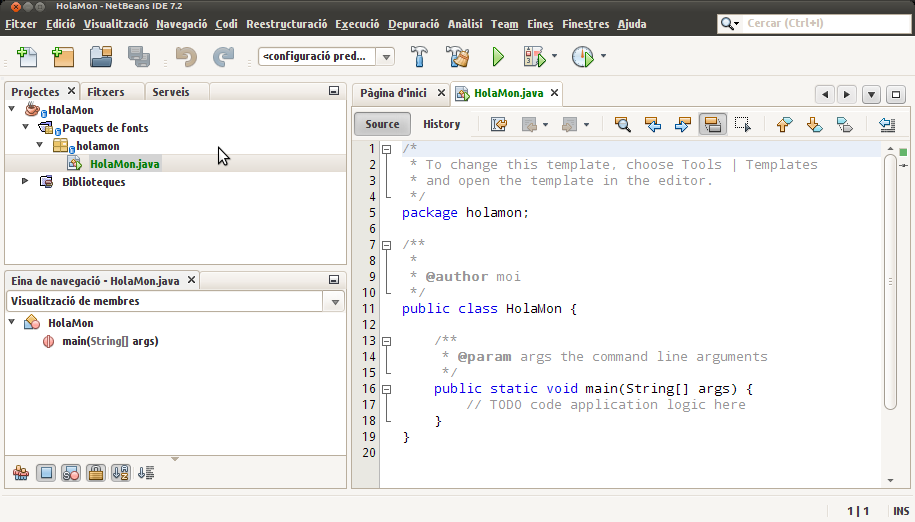

Tutorial d'instal·lació de NetBeans
Introducció
Aquest document descriu una manera d'instal·lar l'IDE NetBeans a un sistema Ubuntu.
Atenció: La instal·lació a altres sistemes operatius no hauria de resultar gaire més complexa.
Instal·lació
Per la realització d'una instal·lació de NetBeans seguirem les següents passes des d'una consola:
Abans d'instal·lar NetBeans
Donat que NetBeans és una aplicació java, caldrà disposar d'una màquina virtual (JVM) al nostre sistema per a poder-la instal·lar.
Si encara no la tens instal·lada, pots seguir el pas 0 de la guia d'instal·lació d'Eclipse.
Obtenció del NetBeans
El NetBeans podria ser instal·lat des del centre de programari que ofereix l'Ubuntu. Amb tot, en el moment en que s'escrivia aquesta guia, la versió empaquetada disponible era la 7.0.1, mentre que la darrera publicada era la 7.2.
Tot i que, probablement, no trobarem cap diferència entre les dues versions per un ús no professional de l'IDE, en aquesta guia es proposa realitzar la instal·lació de la darrera versió.
Per tant, caldrà anar al lloc oficial de NetBeans (netbeans.org) a la secció de descàrregues (des de la pàgina principal hi ha un enllaç directe a la descàrrega de la darrera versió)
Ara escollim idioma i plataforma (probablement la proposta per defecte serà la correcta), i escollim la descàrrega de la versió Java SE (la més bàsica) donat que més endavant podrem afegir altres complements com indica la pàgina al final.
Es descarregarà l'instal·lador, un script d'uns 83 Mb.
Instal·lació del NetBeans
La instal·lació del NetBeans a partir de l'instal·lador descarregat és molt fàcil. Simplement cal executar l'instal·lador i anar seguint les instruccions.
Per executar l'instal·lador podem, per exemple, anar al directori on l'hem descarregat i fer:
$ bash netbeans-7-2-ml-javase-linux.sh
Ens caldrà, a banda d'acceptar una sèrie d'acords de llicències, definir el directori on instal·lar NetBeans i el JDK. Per exemple, podem escollir el directori ~/soft/netbeans7.2 i el jdk per defecte.
En acabar, continuarà descarregant i finalment instal·larà l'aplicació.
Per comoditat, es pot crear algun llançador. Per exemple, per poder executar-ho des de línia de comandes, pot ser còmode:
$ cd ~ $ mkdir -p bin $ cd bin $ cat > netbeans.sh << EOF > #! /bin/sh > ~/soft/netbeans-7.2/bin/netbeans & > EOF $ chmod u+x netbeans.sh
i, des de qualsevol lloc
$ netbeans.sh
Una prova ràpida
Per defecte, NetBeans s'instal·la per construir aplicacions en java.
Aprofitant que no hem de fer res especial, farem una primera prova de l'entorn creant un "original" programa de salutació al món.
Anirem a Fitxer -> Nou projecte i escollirem els valors per defecte (Categoria Java i Projectes Java Aplication) Farem Següent i escollirem un nom de projecte (ex. HolaMon) i un lloc on deixar el projecte (potser l'opció per defecte ja ens està bé) Quan ja ho tenim tot, premem Finalitzar.
En aquest moment ens apareixerà una finestra amb un aspecte similar al següent:
A la subfinestra més ampla (a la dreta), hi trobem un editor amb el codi del nostre projecte. NetBeans ens ha autocompletat una sèrie d'elements per nosaltres. Entre d'altres, ens ha afegit el nostre nom, i ens ha creat un primer esquema de la classe HolaMon que hem demanat crear.
Ara, allà on posa // TODO code application logic here escriurem Sys. A continuació, farem <ctrl>-<espai> i podrem veure que NetBeans ens ofereix, no només com continuar la paraula que estem escrivint, sinó també documentació corresponent a la proposta de compleció. Farem <enter> per completar.
Continuem escrivint un punt . i observem que ens apareix una llista de possibilitats per a continuar que podem navegar amb el cursor. Escollirem out i tornarem a escriure un punt. Ens apareix una nova llista. Aquest cop, començarem a escriure pri i observarem que ens porta a les paraules que comencen amb "pri". Escollirem la primera i ens autocompletarà a la funció System.out.print() deixant-nos el cursor dins dels parèntesis i informant-nos del possible tipus de dades que hi podem ficar dins. Escriurem entre cometes "Hola Món!\n" i farem <enter>. NetBeans col·loca el cursor al final de la sentència.
Si tot està correcte (NetBeans ens avisaria en cas contrari) podem ja executar el nostre programa. Execució -> Executar projecte (HolaMon) i ens apareix una nova subfinestra a la part inferior on es veu el resultat de l'execució del programa. NetBeans s'ha fet càrrec de guardar, compilar i executar el nostre codi.
Ja tenim disponible el NetBeans!